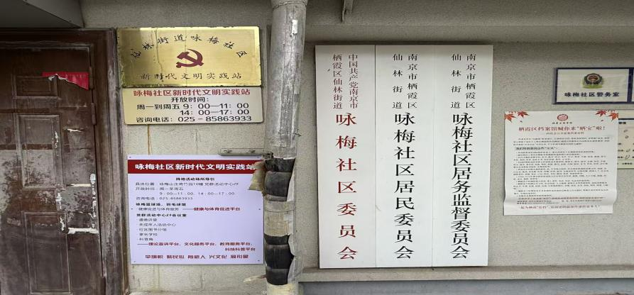
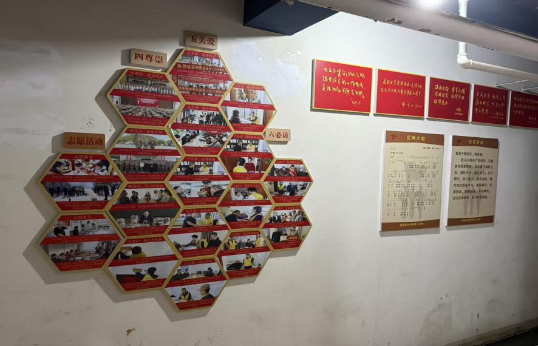
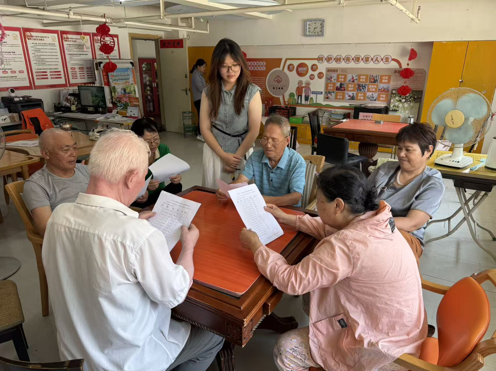
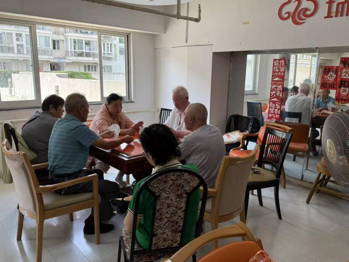

为推动传统戏曲文化与数字智能技术深度融合，打通传统文化服务老年群体的线上线下渠道，近日，“惠润乡土，风筑新梦” 实践团队走进咏梅社区新时代文明实践站，面向辖区老年戏曲爱好者开展戏曲 AI 智能发展主题宣讲活动。团队结合前期在亚东新城、雨花社区开展戏曲活动的基层经验，用通俗易懂的讲解、直观的功能演示，让社区老人近距离感受科技赋能国粹的全新形式。
活动伊始，社区活动室坐满喜爱戏曲的中老年居民，不少老人平日里常凑在一起哼唱《沙家浜》等经典红色剧目，但一直苦于缺少常态化唱戏、听戏的平台。实践队员先结合社区老人的戏曲爱好，回顾前期在周边社区开展线下戏曲传唱课堂的经历，讲述老年群体对传统戏曲深厚的情感寄托，迅速拉近与在场居民的距离。


宣讲环节，队员避开专业晦涩的技术术语，从老年人日常听戏、学戏的痛点切入，系统讲解戏曲 AI 智能平台的各类适老化功能。针对老人们反映的老旧戏曲录像画质模糊、想学唱段缺少伴奏、线下戏聚场次有限、独居在家无伴对唱等问题，逐一演示平台核心服务：AI 修复模糊老戏曲影像、语音一键点播红色样板戏、智能跟唱校正唱腔、自动生成戏曲伴奏、线上戏友交流板块等。同时，队员手把手指导老人操作手机，演示大字体界面、语音搜戏、剧目收藏等简易操作，现场播放大家耳熟能详的戏曲选段，直观展现数字化平台的便捷优势。

互动交流阶段，现场氛围十分热烈。老人们纷纷分享自身困扰：有的老人珍藏多年戏曲磁带却无处播放，有的想学新唱段却无人指点，还有的独居老人平日里缺少一同唱戏的伙伴。队员结合大家的诉求细致解答，介绍戏曲 AI 平台能够 24 小时满足听戏、练戏需求，还可留存老一辈珍贵戏曲演唱录音，为线下戏曲活动做好补充，实现线上线下融合互补。不少阿姨现场亲自上手体验语音点播功能，试过之后连连称赞，感叹智能科技让老年戏迷拥有了随身专属戏台。

此次走进咏梅社区文明实践站的宣讲活动，以戏曲为纽带、以智能技术为桥梁，兼顾老年群体的精神文化需求与数字化适应能力。活动既倾听了银发居民深藏心底的梨园情怀，也为基层社区文化服务提供数字化新思路。下一步，实践团队将持续优化戏曲 AI 平台适老化功能，联动各社区新时代文明实践站，打造线上线下一体、老少共享的数字梨园阵地，让传统戏曲借助数字科技持续焕发新生。